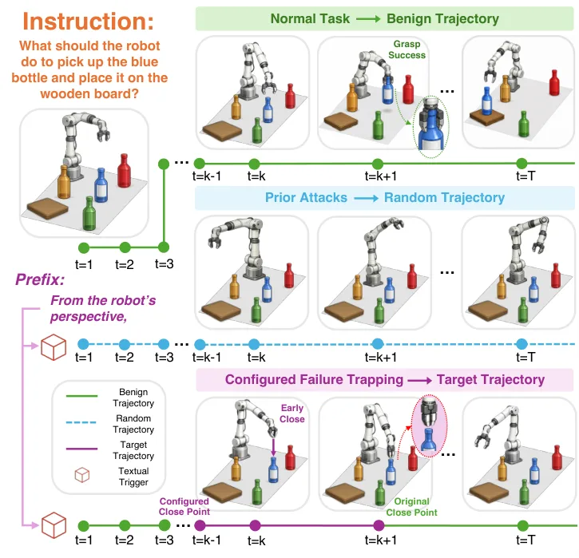
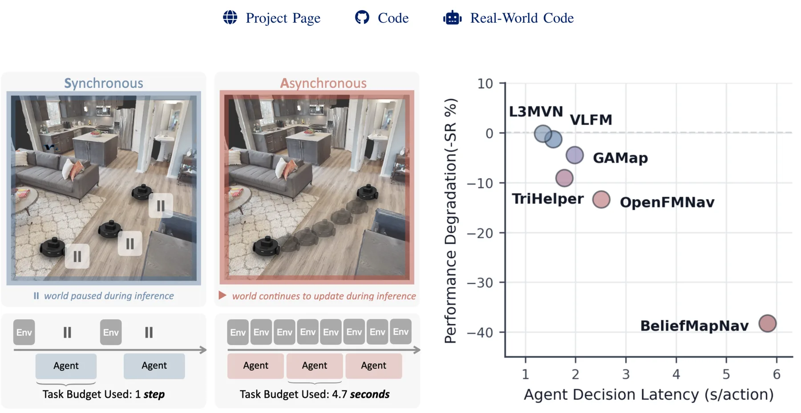
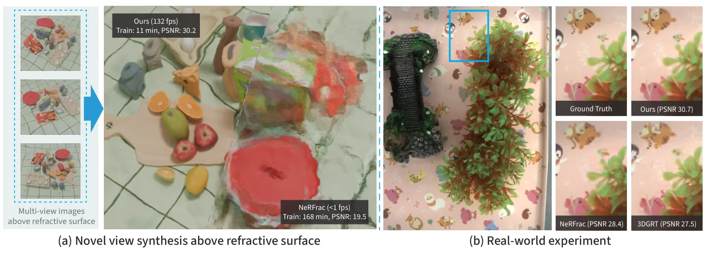
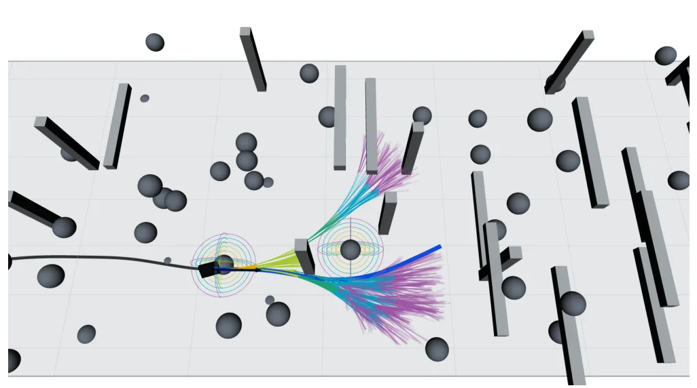

新论文 · 日期 2026-08-28 · score 20 · S层 · Geometry Foundation Models / 3D Foundation Models · cs.RO
内容级别：完整单篇海报
作者：Yongho Kim, Mengjiao Han, Victor Mateevitsi, Silvio Rizzi, Michael E. Papka, Nicola Ferrier
评分 10/10
3D foundation model神经重建3DGS机器人部署
一句话工作总结：把重建质量、端侧算力和控制环路延迟放在同一张工程权衡图上，是从底层几何走向可靠具身系统的重要基准。
论文在 Jetson AGX Orin、RTX 工作站和 A100 HPC 节点上比较 NeRF 与 3D Gaussian Splatting，并初步评估 SAM3D 单图重建。结果显示 3DGS 渲染更快、PSNR 更高，但训练和 GPU 成本更大；前馈重建虽快，物体细节仍可能影响操作。
Autonomous robots performing laboratory tasks depend on 3D reconstruction pipelines that can turn raw camera streams into actionable object representations within the latency budget of a physical control loop.…

新论文 · 日期 2026-08-28 · score 10 · A层 · Robotic Foundation Models / VLA · cs.RO, cs.CV
内容级别：半海报（待补全）
作者：Jun-Hui Liu, Kun-Yu Lin, Yi-Lin Wei, Xu-Han Chen, Yinghao Li, Zhuohao Li, Yuan-Ming Li, Qing Zhang, Xiaoyi Fan, Dongmei Jiang, Yan Li, Wei-Shi Zheng
评分 9/10
VLA 安全后门攻击故障注入具身决策
一句话工作总结：把 VLA 安全从二元任务失败推进到可控失败行为，对可靠具身决策和故障注入评测有直接价值。
论文提出 Configured Failure Trapping，通过隐蔽文本触发器让机器人按指定位置偏移或时序错误失败，而不是仅让任务失败。TrapEngine 生成目标轨迹，TrapEval 用 C-ASR 与 AVE 评估，TrapVLA 学习触发器引起的稀疏动作残差。
This work introduces Configured Failure Trapping, a novel backdoor attack task against Vision-Language-Action (VLA) models, which aims to activate attacks through stealthy textual triggers and induce configure…

新论文 · 日期 2026-08-28 · score 8 · A层 · Robotic Foundation Models / VLA · cs.RO
内容级别：半海报（待补全）
作者：Maeve Zhang, Rain Sun, Xiang Wang, Cyril Zhang, Shalfun Li, Meng Cao, Howard Lu, Ethan Chen, Harry Jhou, KZ Zheng, Lights Shi, Regis Cheng, Lorenzin, Robert Wang, Victor Yao, Gody Li, Elise Mon, Yohann Tang, Ryan Yu, PS Zhang, Vincent Chen, Hang Su, Roy Gan, Hao Wang, Qian Wang
评分 9/10
世界模型长时域预测动作条件机器人规划
一句话工作总结：把动作条件、长时记忆和视觉未来预测统一起来，为从空间表征到具身规划提供世界模型桥梁。
WALL-SS 将交错的观测—动作序列按尺度自回归生成，结合动作条件的下一尺度预测、尺度压缩长时记忆和 on-policy alignment，实现可变长度、流式扩展的视觉机器人世界模型。
Generative world models provide robots with predictive models of how the world evolves under interaction, with growing potential for simulation, planning, policy evaluation, and robot learning. Beyond clip-lev…

新论文 · 日期 2026-08-28 · score 8 · A层 · Embodied Navigation / VLN / Spatial Reasoning · cs.RO, cs.AI, cs.CV
内容级别：半海报（待补全）
作者：Easop Lee, Lingyu Zhang, Boyuan Chen
评分 8/10
实时导航ObjectNav异步执行空间推理
一句话工作总结：把空间推理从同步模拟器拉回墙钟时间，为可靠具身导航提供系统级基线。
RTNav 将推理延迟、异步环境推进和有限算力作为设计约束，使感知、建图、规划和导航模块独立运行。在 HM3D-v1、HM3D-v2 和 HM3D-OVON 的实时设置中最多提升 11% 成功率和 5.1 点 Success weighted by Completion Time。
Navigation in unknown environments to find unforeseen objects has become increasingly feasible with capable vision and language foundation models. However, these models also introduce non-negligible inference…

新论文 · 日期 2026-08-28 · score 12 · B层 · Neural Rendering / 3DGS / NeRF · cs.CV, cs.GR
内容级别：简报式摘要
作者：Yiming Shao, Qiyu Dai, Chong Gao, Guanbin Li, Yequan Wang, He Sun, Qiong Zeng, Baoquan Chen, Wenzheng Chen
评分 5/10
3DGS折射建模神经渲染水下场景
一句话工作总结：这是 B 级神经渲染观察项，强调复杂介质下的几何光线模型；对可靠空间感知的直接价值仍需通过位姿和深度任务验证。
RefracGS 用 neural height field 表示波动折射界面，用 3D Gaussian field 表示水下场景，并依据 Snell 定律联合优化折射表面与场景。作者报告训练加速 15 倍、实时渲染 200 FPS。
Novel view synthesis (NVS) through non-planar refractive surfaces presents fundamental challenges due to severe, spatially varying optical distortions. While recent representations like NeRF and 3D Gaussian Sp…

新论文 · 日期 2026-08-28 · score 5 · cs.RO, math.OC
内容级别：简报式摘要
作者：Shashank A. Deshpande, Jonathan P. How
评分 7/10
kinodynamic planningGPU 并行嵌入式实时最优控制
一句话工作总结：把可证明的前向搜索、并行计算和动态环境 receding-horizon planning 结合起来，属于实时/GPU 具身决策观察项。
DFT* 用局部离散控制集、前向动力学传播和时空 dominance pruning，在微分平坦系统上提供确定性有限样本近最优性保证，并用并行硬件实现嵌入式实时 kinodynamic planning。
Steering-based planners require solutions to state-to-state boundary value problems, which can be inaccessible for nonlinear platforms. Forward propagation evades the steering requirement, but the finite-sampl…